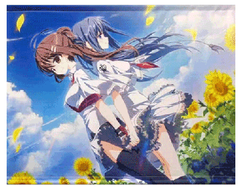

相关书目
查看全部

-
逻辑哲学论
【奥】维特根斯坦
书摘
主体（意味着你我）不属于世界……然而它是世界的一个极限。
世界的意义必定在世界之外。世界中一切事情就如它们之所是而是，如他们之所发生而发生。
世界之中不存在价值。 -
大鼻子情圣
【法】罗斯丹
书摘
“你们要抢走我的一切”
“……来，抢吧，尽管抢吧！但有一样东西，你们只能任凭我带进天堂！”
“我一行礼就把蔚蓝的入口清扫得纤尘不染，这东西没有一丝皱褶，没有一个污点，你们只能任凭我把它带走”
“那就是我的……勇气！” -
荒原狼
【德】赫尔曼·黑塞
书摘
生命是一个需要用全身心去体验的过程，而不是一个需要被理解的客体，或者需要被解决被征服的问题。在体验的过程中，一切经验和一切对象都有了主观的意义，不管是快乐还是痛苦，甚至荒谬，能够被经验的生命是神奇的，每分每秒每个体验都是独特的。
当人能够真正地去体验，而不是活在自己的经验、记忆、虚构的现实或者他人的期望之中，意义就被创造出来，这就是每个生命独特的价值和美丽之所在。 -
银河铁道之夜
【日】宫泽贤治
书摘
这个时候，遥远的天河下游处出现了光彩夺目、色彩斑斓的十字架。它如同一棵大树、粲然矗立在河流之中，其周围缭绕的青云恰如圆圆的光环悬在空中。
车厢里人声鼎沸。人们如同上次见到北十字星时一样，穆然肃立开始祷告。到处可以听到如孩子们扑向食品时的欢呼声和难以形容的深沉的赞叹声。十字架渐渐移行到车窗前，苹果肉般苍白的环状云朵，轻缓地缭绕着。 -

脑髓地狱
【日】梦野久作
书摘
历经出生、成长、生殖、衰老、死亡而感受到的实际时间长度，同样都是一生的长度。不知道此种道理，将自己的一生与同样朝生暮死的昆虫生命相比较而感到叹息，未免显得愚蠢、不自然、不合理。毕竟，这只是将毫无通融的人造时间和无限自如伸缩的天然时间混淆思考的悲喜剧。
真实的时间与人们认知中的人工时间全然不同，跟太阳、地球、其他天体的运行，以及时钟的转动也毫无关系，而是针对无尽的生命的个体感觉，同时在个体中以无限伸缩的自由形态静止或流动着……看到此处，便理解了时间的真相。 -
纯粹理性批判
【德】康德
书摘
我们的一切知识都是从经验开始，这是没有任何怀疑的。
永远不要凭借思辨理性去超越经验的界限。
周边贩售
查看全部
-
素晴日十周年SOFMAP特典
￥999
-
素晴日官方视觉公式|原画集
￥999
-

素晴日B2挂画
￥999
-
素晴日OST CD
￥999
-
素晴日 纳吉尔法的船上 CD
￥999
-
素晴日 空气力学的少女与少年之诗 CD
￥999